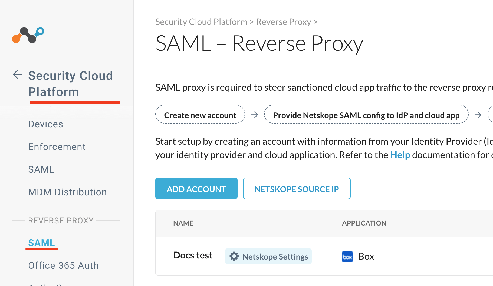
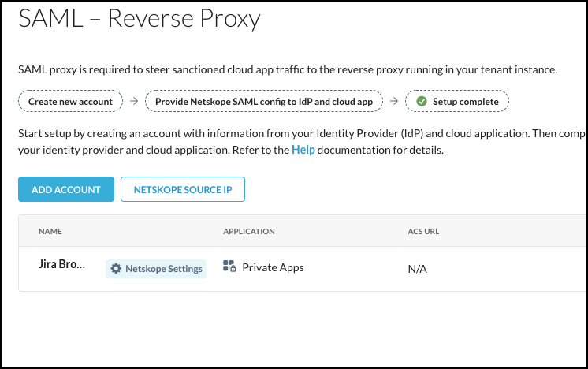
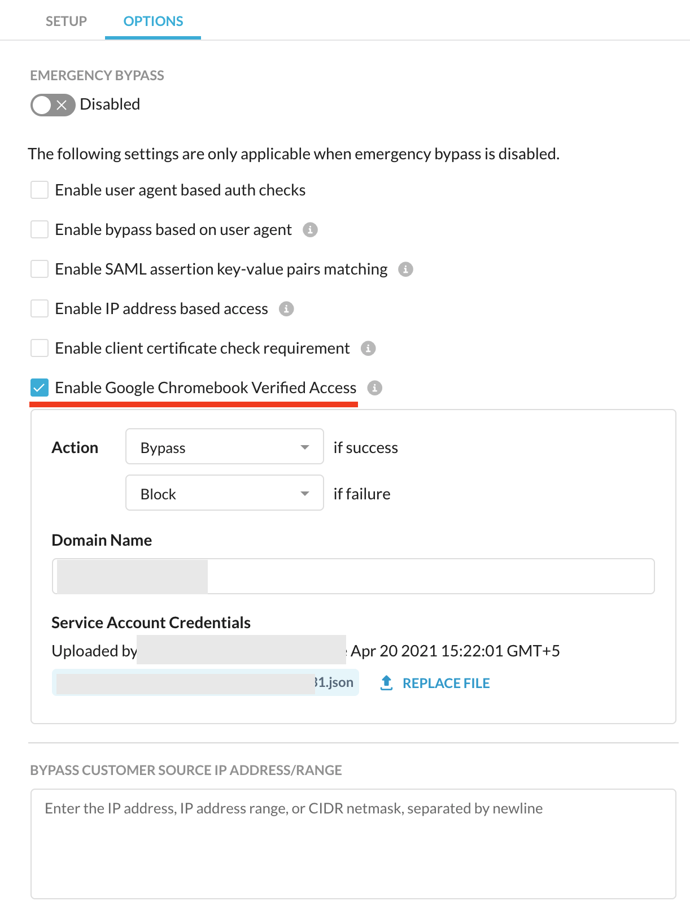

Integrate SAML Reverse Proxy for Google Chromebook
Device policies can be configured for enrolled Google Chromebook devices. This article illustrates prerequisites and steps needed to provision a chromebook device via Netskope SAML proxy.
Prerequisites
Devices must be enrolled before provisioning.
Google domain admin access.
Chromebook Verified Access related service accounts and its keys (JSON).
Chromebook Enterprise License.
Enrolling Chromebook for Provisioning
Google Chromebooks must be enrolled before they can be provisioned in Netskope tenant. To enroll a device, you will need to do the following:
Create service accounts and generate JSON keys.
Enable verified access for the Chromebook.
Note
Refer to Google Cloud documentation for detailed configuration steps.
For service accounts: https://developers.google.com/identity/protocols/oauth2/service-account
Creating a Service Account
Login to https://console.cloud.google.com/
Create new credentials (Service Account) under API & Services
Generate JSON keys for the service account.
Note
If you are setting up the account for the first time, enable Chrome Verified Access API
Enabling Verified Access for Chromebook
Login to https://admin.google.com/
Under Settings > Devices, locate Chrome Devices
Enable the following:
Verified access: Enable for content protection
Verified Mode: Require/Skip Verified mode to boot.
Services with full access. Enter your service account email
Singe Sign-on Verified access: Enter the below URL (replace with your tenant name)
https://saml-<your-tenant-name>.goskope.com/saml/chromedevice/validate
Enabling Chromebook Device Verification
Log in to Netskope UI.
Click Settings > Security Cloud Platform > SAML (under Reverse Proxy).
Click Add Account.
In the New Account window, enter a Name for the account.
On the Setup tab, select and enter these parameters:

Application: Select Google Workspace from the dropdown list.
ACS URL: Enter your ACS endpoint URL.
IDP URL: Enter your IDP URL to send authentication response.
IDP Certificate: Enter / paste your IDP certificate.
Alternate User Field: To use a different field for user identification, enter the field name here. By default, Netskope uses the NameID field.
In the Options tab, select and enter these parameters:
Select Enable Google Chromebook Verified Access option.
Note
This option is available only if Google Workspace is selected from the Application list in the Setup tab.
Action: Select traffic flow rules as per authentication status.
Domain Name: Enter the name of the domain for the device.
Service Account Credentials: Upload the private key created for the service account as mentioned in the prerequisites.